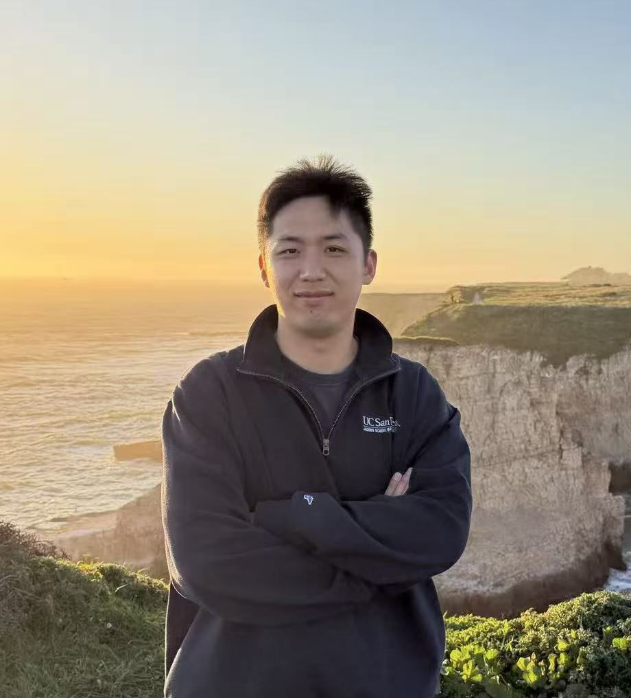
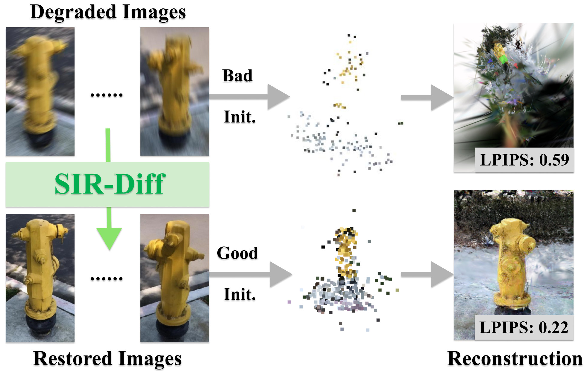
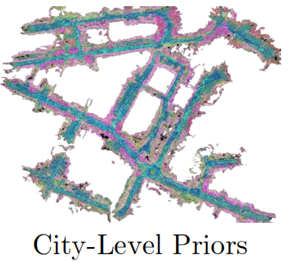
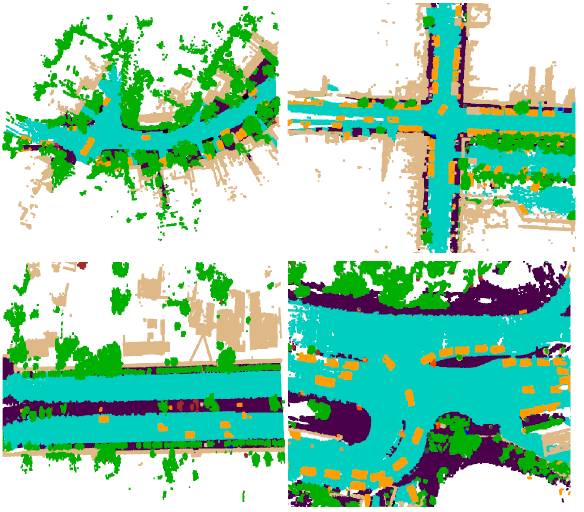

|
Yucheng Mao I am an incoming master student supervisied by Prof. Zhuowen Tu at UC San Diego, CSE. Previously, I did my undergraduate study at University of Science and Technology, Beijing. During my undergraduate, I spent a wonderful time at University of Michigan, Ann Arbor, working with Prof. JJ Park. And I also worked closely with Prof. Hang Zhao at IIIS, Tsinghua University on several excellent research projects.My research interest lies in computer vision, specifically focusing on 3D/4D computer vision and generative models. |
 |
{kind=link}
Research* Denote equal contribution |

|
AnySplat: Feed-forward 3D Gaussian Splatting from Unconstrained Views
Yucheng Mao *, Lihan Jiang *, Linning Xu, Tao Lu, Kerui Ren, Yichen Jin, Xudong Xu, Mulin Yu, Jiangmiao Pang, Feng Zhao, Dahua Lin, Bo Dai, SIGGRAPH Asia 2025, ACM TOG Project page / arXiv 3D Gaussian Splating within a minute |
|

|
Sparse Image Sets Restoration with Multi-View Diffusion Model
Yucheng Mao *, Boyang Wang *, Nilesh Kulkarni, Jeong Joon Park CVPR, 2025 Project page / arXiv Reconstruct a 3D scene with degraded observation. |
|

|
PreSight: Enhancing Autonomous Vehicle Perception with City-Scale NeRF Priors
Tianyuan Yuan, Yucheng Mao, Jiawei Yang, Yicheng Liu, Yue Wang, Hang Zhao, ECCV, 2024 Code / arXiv A novel framework leverages past traversals to construct static prior, enhancing online perception in later navigations. |
|

|
Occ3D: A Large-Scale 3D Occupancy Prediction Benchmark for Autonomous Driving
Xiaoyu Tian*, Tao Jiang*, Yunfei Long, Yucheng Mao, Huitong Yang, Yue Wang, Yilun Wang, Hang Zhao, NeurIPS, 2023 Project page / arXiv |
Open Source Contribution |
|
DETR3D-MMDetection3D Framework
Third-Party Implementation Of UltraLiDAR Third-Party Implementation Of GS-LRM |
|
Website inspired by Jon Barron. |